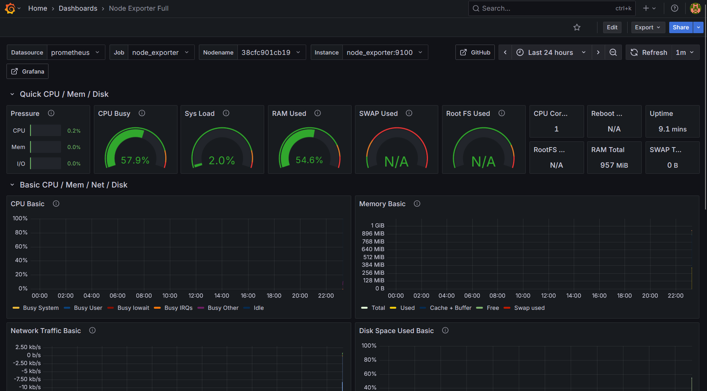
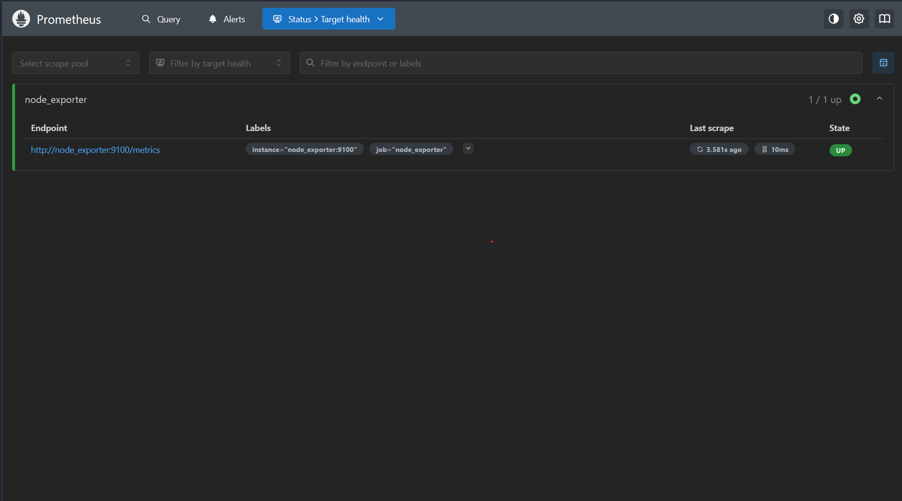

Automated Monitoring Stack - Deployment
Overview
This project is a Proof of Concept (PoC) for deploying a full-featured observability stack on AWS. The solution leverages Terraform for infrastructure provisioning, Ansible for configuration management, and Docker for containerization of the monitoring tools.
Key Components
- > Infrastructure: AWS EC2 instance.
- > Provisioning: Terraform for IaC (Infrastructure as Code).
- > Configuration: Ansible playbooks for automated setup of monitoring tools.
- > Monitoring Tools: Prometheus, Grafana, and Node Exporter.
Features
- > Automated Deployment with a single command.
- > Containerized Services for portability and easy management.
- > Centralized Monitoring for key metrics.
- > Extensible to add more exporters or targets.
Screenshots


Getting Started
To get this stack up and running, follow these steps:
sharan@sre:~$ git clone https://github.com/sharanch/monitoring-stack.git
sharan@sre:~$ cd monitoring-stack
sharan@sre:~$ cd ..
sharan@sre:~$ cd terraform
sharan@sre:~$ terraform apply
sharan@sre:~$ ansible-playbook -i aws_ec2.yml play-to-docker.yml